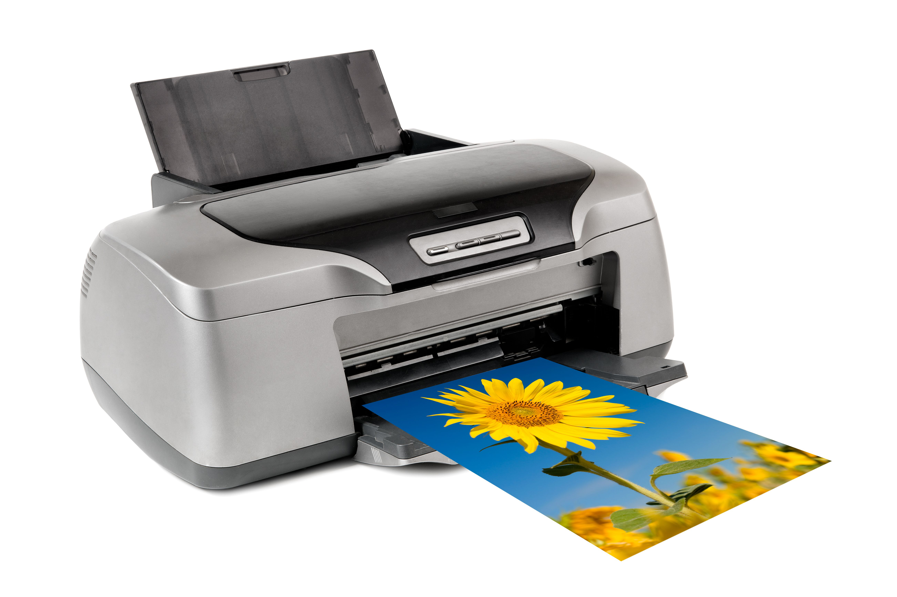

Home
Computer and its Components
A computer is an electronic device that makes our work easier and faster.

Main Components:
- Keyboard - An input device used to type text and commands into the computer.
 A keyboard
A keyboard
- Mouse-A pointing device used to click, select, and move items on the screen.
A Mouse
- Monitor - An output device that displays text, images and videos.
 A Monitor
A Monitor
- System unit- The main part of the computer that houses the c.p.u, memory and devices.
systemunit
- printer - An output device that produce a hard copy of documents and images from the computer.

A printer
- scanner - An input device that converts physical documents or images into digital format
 A scanner
A scanner
lesson01
lesson02
Lesson03